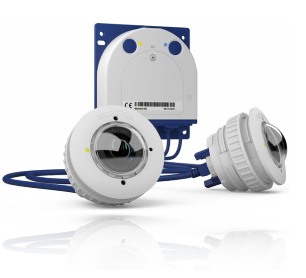
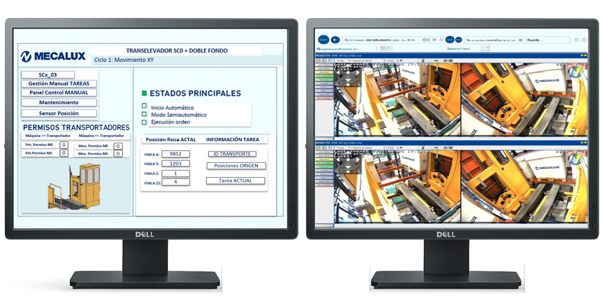

Solución integral para la monitorización avanzada de transelevadores, optimizando la toma de decisiones y el inventario.


Monitorización visual constante del estado operativo y seguridad del equipo.
Capacidad de intervención directa sobre el transelevador desde el puesto de mando.
Elimina tiempos de parada prolongados mediante diagnóstico instantáneo.
Supervisión constante de zonas críticas y protocolos de seguridad.
Detección temprana de comportamientos fuera de norma en el sistema.
Reconocimiento de etiquetas para una precisión total en el control de stock.